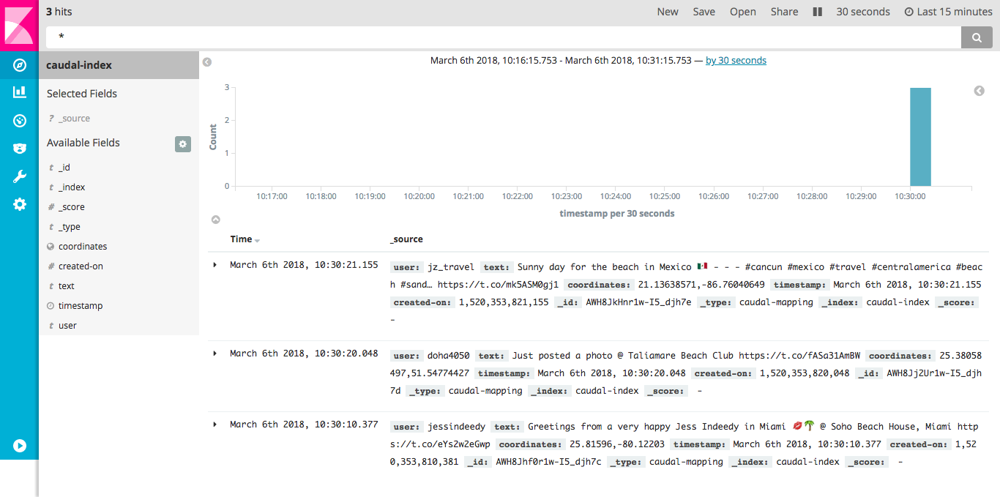
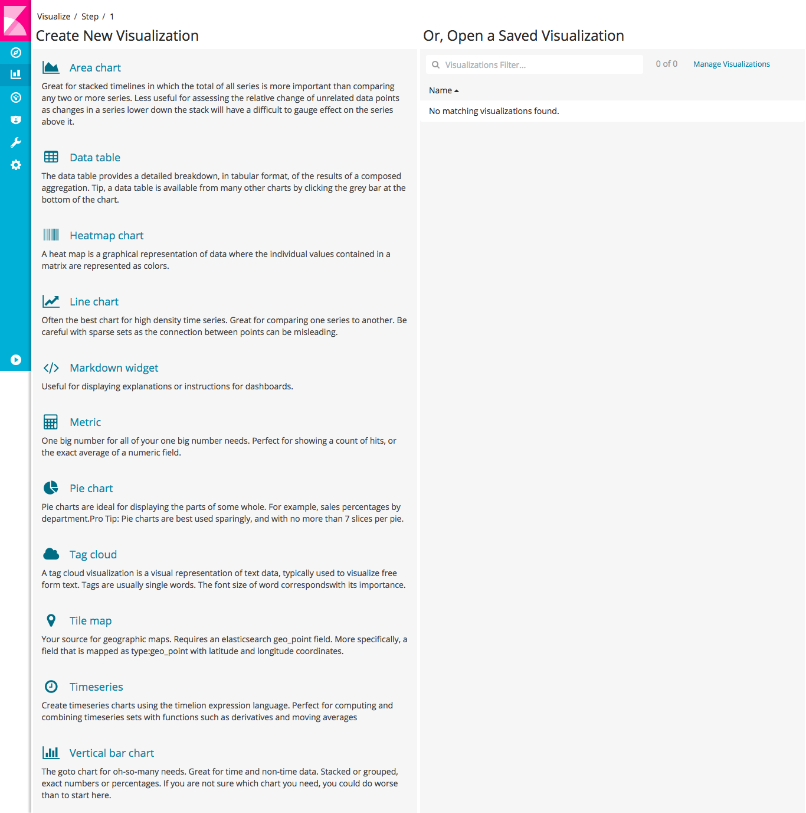
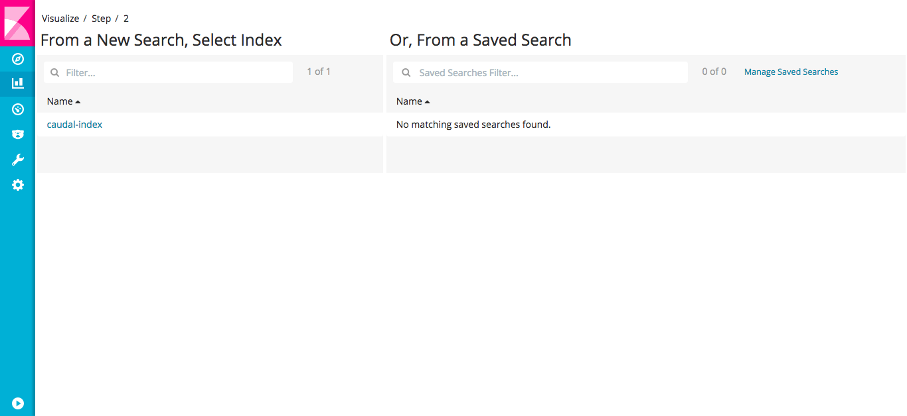
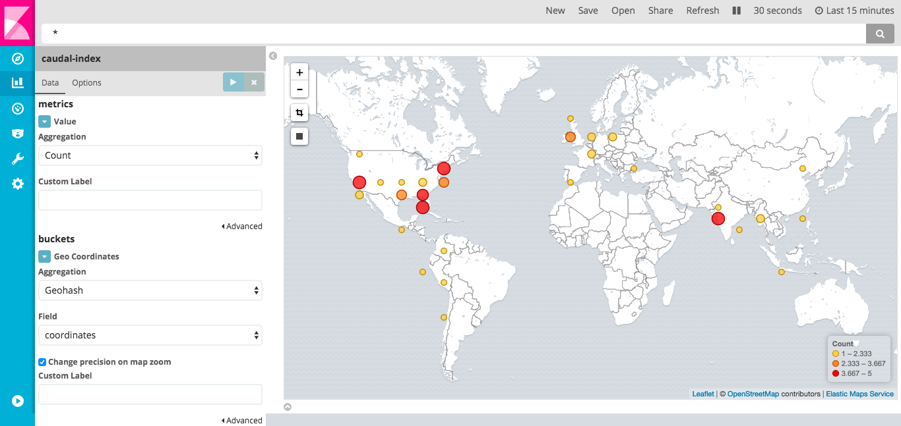
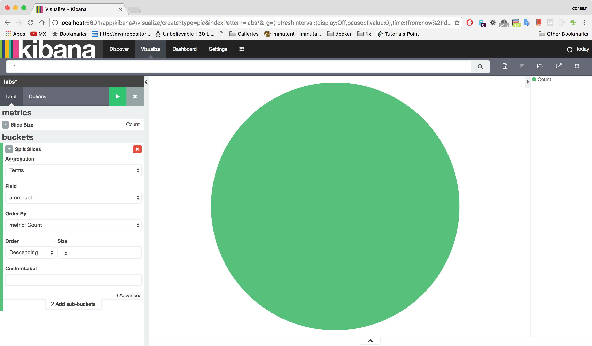
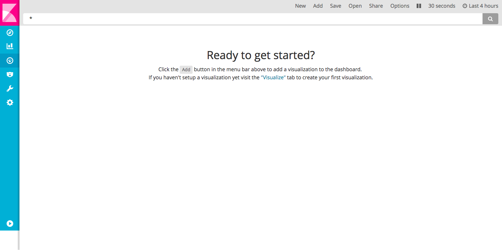
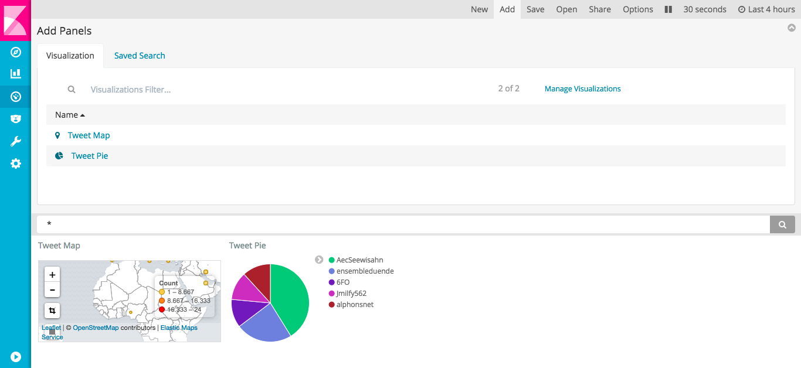
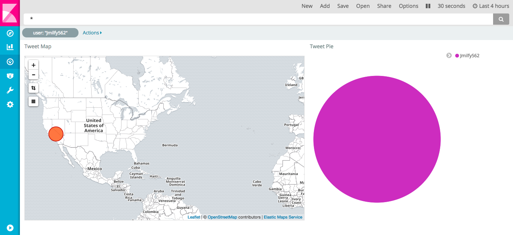

Caudal offers integration with a wide set of tools.
Requirements
Elasticsearch
Caudal, as an in-memory streaming processor, does not have an internal mechanism to store events atomically. Elasticsearch could be util in scenarios where we need to search and extract historical reports.
Next, we propose an exercise to push extracted events from Twitter to Elasticsearch, and extract reports through Kibana:

Configuration
Write following configuration in config/ directory, and enjoy comments:
;; Requires |
Download and start Elasticsearch before to start Caudal:$ wget https://artifacts.elastic.co/downloads/elasticsearch/elasticsearch-5.2.2.tar.gz
$ tar xzvf elasticsearch-5.2.2.tar.gz
$ cd elasticsearch-5.2.2
$ bin/elasticsearch
Check connectivity to port 9200 of Elasticsearch using curl:$ curl http://localhost:9200
{
"name" : "bdbqlra",
"cluster_name" : "elasticsearch",
"cluster_uuid" : "hjpH9C0USPOiSno8b2yNqA",
"version" : {
"number" : "5.2.2",
"build_hash" : "f9d9b74",
"build_date" : "2017-02-24T17:26:45.835Z",
"build_snapshot" : false,
"lucene_version" : "6.4.1"
},
"tagline" : "You Know, for Search"
}
Start Caudal passing configuration file:$ bin/caudal -c config/twitter-elastic.clj start
Verifying Elasticsearch contents:
$ curl -XPOST 'localhost:9200/caudal-index/_search?pretty' -d '{"query": { "match_all": {} }}' |
Kibana
In order to create visualizations and reports, we need to install and run Kibana:$ wget https://artifacts.elastic.co/downloads/kibana/kibana-5.2.2-linux-x86_64.tar.gz
$ tar xzvf kibana-5.2.2-linux-x86_64
$ cd kibana-5.2.2-darwin-x86_64/
$ bin/kibana
Open url http://localhost:5601 in a browser and click on Settings.
In Configure an index pattern screen put as index caudal-index and select timestamp as Time-field name, then click in Create:

Now, click Discovery button (on top of sidebar), you should be a Timeline with incoming events:

Visualizations
Tile map
Creating a visualization for events is quite easy, in sidebar click Visualization. In this screen, search in column Create new Visualization for Tile map and click:

In Step 2 select caudal-index in column From a New Search, Select Index:

In Tile map screen, in Data Options, click Geo coordinates. Select Geohash aggregation and coordinates as field. Now click in Play button and map is updated with cluster points by geolocated tweet:

Save your visualization using Save button.
Pie chart
Click Visualize button until you can see Create new Visualization, then search for Pie chart. Again in Step 2 select caudal-index in column From a New Search, Select Index.
In Pie chart screen, Click Split Slices using Terms as aggregation and user as field. This pie shows top five tweeters:

Save your pie using Save button.
Dashboards
Kibana provides Dashboards as a mechanism to group several visualizations in a single screen.
Click on Dashboard button on sidebar:

Click Add button to select visualizations saved previously:

You can add visualization to screen and customize it size and order:

Clicks and selections in a single visualization filter data in all the others:
